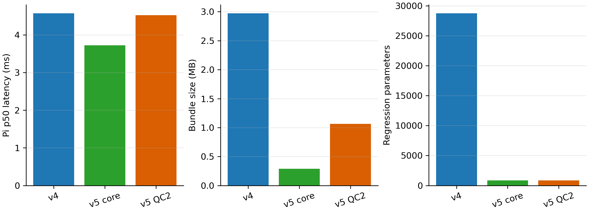
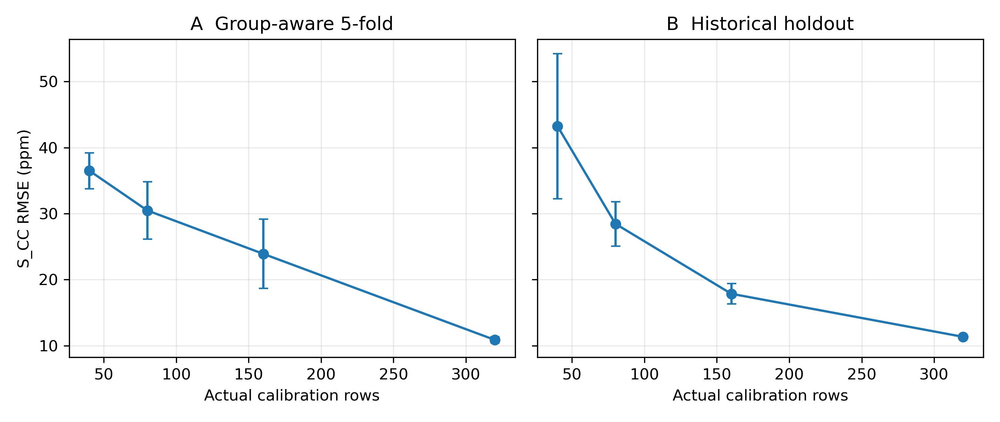
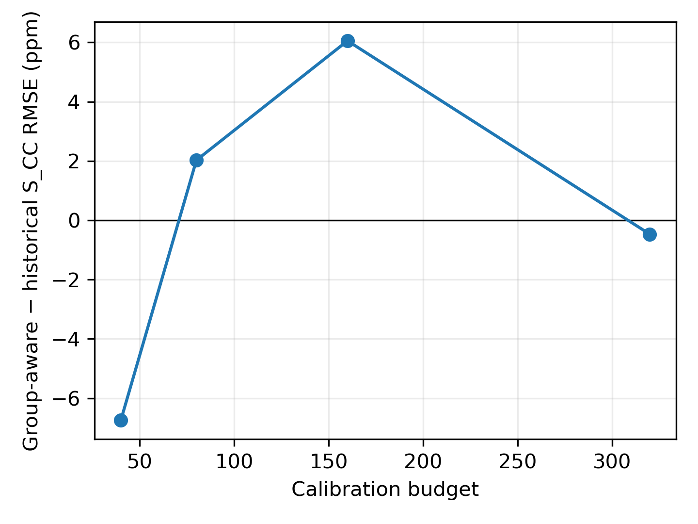

GAPS：真实设备联邦分类、充分统计量回归参考与轻量目标个性化的跨设备气体感知系统
GAPS: Cross-Device Gas Sensing with Real-Device Federated Classification, a Sufficient-Statistics Regression Reference, and Lightweight Target Personalization
摘要
跨设备气体感知需要同时处理类别识别、浓度估计和可靠输出中的设备偏移。本文提出 GAPS：源设备在真实三机拓扑上训练 B5 联邦分类器，服务器执行域适应；随后 C1/C2 在不上传原始样本行的条件下交换特征矩与正规方程等充分统计量，重构一个共享的分气体 Ridge 回归参考；目标设备 C5 使用 104 维 rich features 与 1 维 Federated H1 预测训练 105 维轻量个性化 Ridge。五个训练种子上，B5 accuracy 为 0.989118 ± 0.005983。Federated-H1 个性化的五种子 S_CC RMSE 为 11.6339 ± 0.3142 ppm；其相对 all-prior 方法的退化为 0.981637%，满足预注册 1% 非劣标准，但 all-prior 的绝对均值略低。正式 seed-42 frozen target 结果为 11.3416 ppm。v5 回归核心将回归参数从 28,737 降至 844，Raspberry Pi 5 p50 延迟从 4.571 ms 降至 3.725 ms；v4 仍是正式 selective-output baseline，v5 QC2 因覆盖率和 CO guards 未通过而未晋级。统一 group-aware 分析显示，将 C5 calibration 从 320 减至 160 个窗口时，mean S_CC RMSE 从 10.8724 增至 23.9156 ppm，说明目标个性化对 calibration coverage 高度敏感。
关键词：真实设备联邦分类；服务器端域适应；充分统计量 Federated Ridge；目标个性化；选择性输出；校准预算敏感性
Abstract
GAPS combines real-device federated classification with source-side sufficient-statistics aggregation for a shared per-gas Ridge reference and lightweight target-device personalization. Across five training seeds, B5 achieved 0.989118 ± 0.005983 accuracy. Federated-H1 personalization obtained 11.6339 ± 0.3142 ppm correct-route RMSE and met the preregistered 1% non-inferiority margin relative to the all-prior model, although the latter had a slightly lower absolute mean. The frozen seed-42 target result remains 11.3416 ppm. The simplified regression core reduced regression parameters from 28,737 to 844 and Raspberry Pi 5 median latency from 4.571 to 3.725 ms. Runtime v4 remains the formal selective-output baseline because the v5 QC2 candidate reduced accepted error at lower coverage and failed HC90 CO guards. Group-aware calibration analysis further showed that halving target calibration from 320 to 160 windows more than doubled mean correct-route RMSE, exposing a major deployment limitation.
I. 引言
金属氧化物半导体阵列易受制造差异、漂移和工作环境影响，使源设备模型难以直接迁移到新设备 [1], [2], [20]。对于气体感知，分类错误还会改变浓度专家路由，因此分类、回归和选择性输出必须在同一部署合同中评价。已有联邦学习与边云协同研究提供了去中心化优化基础 [3], [4], [17]–[19]，但目标设备仍需要透明的 calibration 资源与可审计的可靠性边界。
GAPS 将系统划分为四个证据一致的阶段：真实设备联邦分类与服务器端域适应；源端充分统计量聚合得到共享回归参考；目标端轻量 Ridge 个性化；以及 accept/review/reject 三态输出。本研究不声称完整端到端回归在网络中联邦训练，也不为充分统计量交换提供形式化隐私保证。
本文贡献为：
- 在 Raspberry Pi C1、ECS C2 与 Alibaba ECS server 的真实拓扑上完成 25 轮联邦分类，并用 seeds 42–46 验证 B5 稳定性。
- 以源端局部特征矩、正规方程和校准分数构建共享分气体 Ridge reference；原始源样本行不上传。
- 将 Federated H1 prediction 与 rich features 结合为 105D 目标个性化输入，并在预注册 1% S_CC margin 下证明相对 all-prior 的非劣性。
- 实现并审计 runtime，联合报告 selective-output trade-off、PC/Pi 效率、application payload 与 calibration-budget sensitivity。
II. 相关工作
传统传感器漂移与校准迁移方法通常依赖匹配样本、特征映射或重新标定 [1], [2], [16], [20]。FedAvg、FedProx 与 federated sensing 研究分别讨论模型聚合、系统异质性和边云协同 [3], [4], [17]–[19]。域适应和原型学习为目标偏移提供语义约束 [5]–[9]，选择性预测则强调在误差与覆盖率之间建立显式工作点 [10]–[12]。GAPS 的区别在于：把真实设备分类、充分统计量回归 reference、目标个性化及三态输出绑定为一条可审计部署链。
III. 系统与数据协议
Table I. Dataset, gas classes, devices, and split roles.
| Device/role | Platform | Role | Paper split |
|---|---|---|---|
| C1 | Raspberry Pi 5 | source classifier + local H1 statistics | local source train/validation |
| C2 | ECS client | source classifier + local H1 statistics | local source train/validation |
| Server | Alibaba ECS | FedAvg, server-side DA, H1 statistics aggregation | no raw C1/C2 training rows |
| C5 | target device | target personalization and deployment test | 320 calibration / 1360 test windows |
| Sensors | 8 MOS channels | Ethanol, CO, Ethylene, Methane | 100×8 response windows |
Data protocol. 本文将目标设备协议统一称为 calibrated-target held-out-window evaluation。先从原始 measurement files 构造 100×8 windows，再按 gas class 与 concentration 分层划分 C5 calibration/test，分别包含 320/1360 个 windows。同一个具体 window/sample row 只属于一个 subset，不跨 calibration 与 test 重复；但同一原始文件生成的不同 windows 可以分别出现在两个 subsets。因此，该协议不强制原始文件互斥，也不表示对全新 measurement runs 的泛化。历史 calibration 内部 240/80 selection 仍为 window-level；filename overlap 描述的是 grouping dependence，不等同于使用 test labels 训练。

IV. 方法
A. 真实设备联邦分类
B5 使用卷积—注意力分类骨干，在 C1/C2 上以 Client Adam（learning rate 5×10−4）、batch size 32、每轮五个 local epochs 训练。服务器执行 25 个 communication rounds，并在每轮执行 100 个 server-side domain-adaptation steps。五种子仅改变随机种子；拓扑、数据、优化器和 B5 开关保持冻结。

B. Sufficient-statistics Federated Ridge
四类气体独立拟合。客户端首先计算局部特征计数、均值及二阶矩，服务器聚合后重构 global scaler。对每个候选 Ridge 系数 α，客户端在标准化特征上构造带截距的正规方程 XTX 与 XTy；服务器求解候选模型，再由客户端返回 clipped validation SSE 与计数用于 calibration-only α 选择。选定 α 后聚合完整 source fit statistics 并重构最终 H1。交换内容不包含原始 source rows、X/y 表或逐样本预测；但统计量没有安全聚合或差分隐私保护。
C. 目标个性化
C5 为每个窗口提取 104D rich features，并附加 1D Federated H1 prediction，形成 105D 输入。根据冻结 B5 predicted class 路由到四个独立 target Ridge。α 仅由 C5 calibration 内部 fit/validation 或 group-aware folds 选择，随后在当前完整 calibration subset 上 refit。Test labels 不用于 model fitting、hyperparameter selection、alpha selection、QC threshold selection 或 checkpoint selection；evidence freeze 之后也不再进行 method selection 或 reselection。

D. Runtime 与 QC 角色
Runtime v4 是包含多 reference/multi-expert 风险语义的正式 selective-output baseline。Runtime v5 core 只实现 B5→Federated H1→105D target Ridge 的简化回归链。v5 QC2 使用 confidence 与 prototype/support distance 构建独立候选风险。HC95/HC90 均产生 accept、review、reject；只有 accept 行输出 auto_output_ppm。v4 与 v5 的风险语义和部署角色不互换。
V. 实验协议
Evaluation protocol. 正式目标设备评价采用 calibrated-target held-out-window evaluation：window construction precedes splitting；C5 windows 按 gas class 与 concentration 分层为 320 calibration 和 1360 test。同一具体 window/sample row 不跨 subset，但同一 original file 的不同 windows 可以同时出现在 calibration 与 test。Filename overlap 与 test-label leakage 是不同问题：前者限制 original-file/session-level 外推，后者涉及是否使用 test labels 进行训练或选择。本文 test labels 不参与 fitting、hyperparameter/alpha/QC-threshold/checkpoint selection；evidence freeze 后不再选择方法。分类标准差来自 seeds 42–46；回归标准差来自五个冻结 B5 routes。S_CC 只统计分类路由正确行，S_ALL 统计全部 test 行。Low-calibration 与 harmonization 仅为 frozen-method post-freeze 描述性分析，不用于方法重选。
VI. 结果
4.0 Legacy classification ablation context
Table II-A. Legacy single-seed classification context; not a strict component-wise ablation of final B5.
| Configuration | Target labels | Distribution alignment | Semantic constraint | Accuracy | Evidence status |
|---|---|---|---|---|---|
| A0 | 0 | None | None | 0.265441 | LEGACY_SINGLE_SEED |
| A0T | 320 | None | Target supervised CE | 0.982353 | LEGACY_SINGLE_SEED |
| A5 | 320 | Historical CORAL/MMD/stage/adversarial | Historical alignment + replay | 0.730147 | LEGACY_HISTORICAL_SEMANTICS |
| A6 | 320 | None | Historical prototype/consistency/residual | 0.980147 | LEGACY_HISTORICAL_SEMANTICS |
| B1 | 320 | Corrected class-conditional CORAL | Semantic core | 0.987500 | LEGACY_SINGLE_SEED_CORRECTED_SCREEN |
| B2 | 320 | Corrected global/class MMD2 | Semantic core | 0.992647 | LEGACY_SINGLE_SEED_CORRECTED_SCREEN |
| B3 | 320 | Corrected cross-domain class/phase stage MMD2 | Semantic core | 0.988971 | LEGACY_SINGLE_SEED_CORRECTED_SCREEN |
| B4 | 320 | Corrected Wasserstein-min adversarial | Semantic core | 0.989706 | LEGACY_SINGLE_SEED_CORRECTED_SCREEN |
| B5 (v3 screen) | 320 | Corrected full distribution terms | Semantic core | 0.988971 | LEGACY_SINGLE_SEED_CORRECTED_SCREEN |
| Final B5 (seed42) | 320 | Corrected full distribution terms | Semantic core | 0.980147 | FINAL_FROZEN_CANONICAL |
A0/A0T/A5/A6 retain historical single-seed execution semantics; B1–B5 are corrected single-seed screening configurations. The historical A7 result is intentionally excluded, and the table must not be interpreted as a strict component-wise decomposition of the canonical final B5.
4.1 Federated classification performance
Table II. B5 five-seed classification performance.
| Metric | Mean | Sample SD | Min | Max |
|---|---|---|---|---|
| Accuracy | 0.989118 | 0.005983 | 0.980147 | 0.994853 |
| Macro-F1 | 0.989134 | 0.005960 | 0.980220 | 0.994852 |
| NLL | 0.100237 | 0.037833 | 0.054088 | 0.150294 |
| ECE | 0.010607 | 0.005774 | 0.005050 | 0.019368 |
B5 在五个训练种子上的 accuracy 与 macro-F1 均约为 0.989，且 NLL/ECE 波动有限。这支持“在当前 C1/C2→C5 协议和 seeds 42–46 下稳定”的限定结论，而非跨任意设备或随机种子的普遍鲁棒性。
4.2 Regression method selection
Table III. Five-seed regression comparison and non-inferiority.
| Method | Input/dependency | S_CC RMSE (ppm) | S_ALL RMSE (ppm) | Decision |
|---|---|---|---|---|
| Rich features only | 104D | 14.4546 ± 0.2621 | 20.4668 ± 3.4577 | baseline |
| Federated-H1 personalization | 104D + one source reference | 11.6339 ± 0.3142 | 18.5080 ± 4.3211 | selected: 1% non-inferior |
| All-prior personalization | 104D + three source references | 11.5208 ± 0.3148 | 18.5982 ± 4.4192 | absolute S_CC lower |
All-prior 的 absolute mean S_CC 略低，并在 5/5 seeds 上优于 Federated H1。Federated H1 的 paired relative degradation 为 0.981637%，通过预注册 1% 非劣标准，同时把 source regression references 从三个减少到一个，因此被选为最终简化回归依赖。该选择是“非劣 + 简化”，不是精度优越。

4.3 Sufficient-statistics equivalence
Federated H1 与 pooled reference 的 4/4 gas α 一致，C5 H1 prediction 最大绝对差为 6.2532×10−8 ppm，S_CC RMSE 差为 6.7040×10−12 ppm，审计状态为 PRACTICAL_EQUIVALENCE。源端上传 moments、normal equations 与 clipped validation SSE/count，服务器返回 scaler 与 Ridge candidates；这些证据支持 raw source rows remain local，但不支持更强的安全性表述。
4.4 Selective-output quality–coverage
Table IV. Selective-output quality–coverage trade-off.
| Runtime/workpoint | A/R/R | Accepted yield | Accepted RMSE (ppm) | CO yield | CO RMSE (ppm) | Status |
|---|---|---|---|---|---|---|
| V4 HC95 | 1323/33/4 | 97.28% | 18.8520 | 96.76% | 19.7767 | FORMAL_BASELINE |
| V4 HC90 | 1235/107/18 | 90.81% | 15.8328 | 84.71% | 19.7243 | FORMAL_BASELINE |
| V5 HC95 | 1275/41/44 | 93.75% | 13.9178 | 85.88% | 19.6774 | VALID_CANDIDATE_NOT_PROMOTED |
| V5 HC90 | 1183/113/64 | 86.99% | 12.7723 | 64.12% | 20.8318 | VALID_CANDIDATE_NOT_PROMOTED |
v5 QC2 在 HC95/HC90 上分别取得 13.9178/12.7723 ppm accepted RMSE，但 accepted yield 仅为 93.75%/86.99%。相对 v4，yield 分别下降 3.53/3.82 percentage points。HC90 CO yield 从 84.71% 降至 64.12%，CO accepted RMSE 从 19.7243 增至 20.8318 ppm，因此 v5 QC2 未晋级，v4 保持正式 baseline。

4.5 System efficiency
Table V. System efficiency on PC and Raspberry Pi 5.
| Runtime | Regression params | Bundle bytes | p50 / p95 (ms) | Throughput (window/s) | Peak RSS (MiB) | Peak temp. (°C) | Status |
|---|---|---|---|---|---|---|---|
| V4 FULL | 28,737 | 2,971,538 | 5.434 / 13.945 | 144.3 | 199.8 | — | FORMAL_BASELINE |
| V5 REGRESSION CORE | 844 | 289,916 | 4.072 / 14.786 | 159.3 | 195.7 | — | FINAL_SIMPLIFIED_REGRESSION |
| V5 QC2 CANDIDATE | 844 | 1,065,632 | 5.477 / 19.312 | 125.8 | 197.9 | — | VALID_CANDIDATE_NOT_PROMOTED |
| V4 FULL | 28,737 | 2,971,538 | 4.571 / 4.621 | 209.1 | 237.9 | 54.00 | FORMAL_BASELINE |
| V5 REGRESSION CORE | 844 | 289,916 | 3.725 / 3.765 | 254.2 | 234.2 | 52.35 | FINAL_SIMPLIFIED_REGRESSION |
| V5 QC2 CANDIDATE | 844 | 1,065,632 | 4.523 / 4.571 | 211.4 | 235.1 | 54.55 | VALID_CANDIDATE_NOT_PROMOTED |
v5 core bundle 为 289,916 bytes，v4 为 2,971,538 bytes，v5 QC2 为 1,065,632 bytes。Pi 三次正式对象均 throttled=0x0，峰值温度 54.55 °C。B5 25-round measured application payload 为 17,572,650 bytes；该值包含应用层序列化开销，但未采集 transport bytes。

4.6 Calibration-budget sensitivity
Table VI. Group-aware calibration-budget sensitivity.
| Calibration windows | S_CC RMSE (ppm) | S_ALL RMSE (ppm) | Variability source |
|---|---|---|---|
| 320 | 10.8724 ± 0.4391 | 25.2525 ± 0.4934 | fold/alpha-selection |
| 160 | 23.9156 ± 5.2550 | 33.5489 ± 4.4420 | subset + fold |
| 80 | 30.4799 ± 4.3262 | 37.5764 ± 3.1809 | subset + fold |
| 40 | 36.4992 ± 2.7156 | 41.1598 ± 1.8896 | subset + fold |
统一 group-aware protocol 下，320→160 windows 使 mean S_CC RMSE 从 10.8724 增至 23.9156 ppm，超过两倍；CO-high 与 Methane 尤其敏感。10.8724 ppm 是 group-aware fold-selection 均值，不能替代正式 historical protocol 下的 frozen seed-42 RG1 结果 11.3416 ppm。

4.7 Calibration-protocol harmonization audit
Historical holdout 与 group-aware 两条轨迹均随预算下降而退化，但幅度随 protocol 和 budget 改变，最终描述为 SENSITIVITY_PARTLY_PROTOCOL_DEPENDENT。Historical 240/80 保留 window-level membership；harmonization 不选择更优 protocol，也不覆盖正式 11.3416 ppm 主结果。
VII. 讨论与局限
Calibration sensitivity. 在统一 group-aware protocol 下，将 target calibration 从 320 减至 160 windows 使 mean S_CC RMSE 超过两倍。两种 protocol 的退化方向一致，但退化幅度部分依赖内部 selection protocol 与 budget。
Evaluation boundary. The target-device evaluation uses a class- and concentration-stratified window-level split. Different windows from the same measurement run may occur in both calibration and test. The reported results therefore characterize post-calibration held-out-window performance rather than generalization to entirely unseen measurement runs.
该边界反映原始文件层面的相关性，而不是 test-label leakage：同一个具体 window/sample row 不跨 subset，且 test labels 未进入 fitting 或冻结选择流程。历史 calibration 内部 240/80 selection 以及 post-freeze sensitivity 分析继续按各自已登记的 window-level 边界解释。
Gas and QC limitations. CO-high 与 Methane 对 calibration coverage 尤其敏感。v5 QC2 能富集高误差样本，但 coverage 与 HC90 CO guards 未通过，因此没有取代 v4。
Privacy boundary. Federated H1 构建中 raw source samples remain local；交换的 sufficient statistics 没有安全聚合或差分隐私保护，本文不主张形式化隐私保证。
Future work. 后续工作仅包括 unseen-session 或 original-file-independent evaluation、更多 physical target devices，以及针对 sufficient statistics 的更强隐私保护。FedProx/FedAdam/SCAFFOLD 排名、多目标 reruns、新 QC 和新 regression heads 不属于当前投稿范围或待完成实验。
VIII. 结论
GAPS 在真实设备联邦分类、充分统计量 source regression reference 与轻量 target personalization 之间建立了可执行闭环。五种子结果支持 B5 分类稳定性；Federated H1 在预注册 1% margin 下相对 all-prior 非劣并显著简化依赖；v5 core 降低了回归参数、bundle 和 Pi median latency。与此同时，v4 仍是更强的正式 selective-output baseline，目标 calibration coverage 仍是系统主要限制。上述结论共同界定了效率收益与可靠部署边界。
Appendix A. Frozen supporting tables and figures
Table A7. Calibration protocol harmonization comparison.
| Budget | Historical S_CC | Group-aware S_CC | G−H (ppm) |
|---|---|---|---|
| 320 | 11.3416 ± 0.0000 | 10.8724 ± 0.4391 | -0.4692 |
| 160 | 17.8621 ± 1.5586 | 23.9156 ± 5.2550 | 6.0536 |
| 80 | 28.4545 ± 3.3698 | 30.4799 ± 4.3262 | 2.0254 |
| 40 | 43.2442 ± 10.9745 | 36.4992 ± 2.7156 | -6.7449 |


Tables A1–A6 and A8 are provided as frozen CSV artifacts in docs/paper_evidence_freeze/paper_tables/. They cover per-seed classification, per-seed and per-gas regression, QC OOF selection, QC per-gas results, communication payload, and low-calibration per-gas results.
参考文献
- A. Vergara, S. Vembu, T. Ayhan, M. A. Ryan, M. L. Homer, and R. Huerta, “Chemical gas sensor drift compensation using classifier ensembles,” Sensors and Actuators B: Chemical, vol. 166--167, pp. 320--329, 2012, doi: 10.1016/j.snb.2012.01.074.
- J. Fonollosa, I. Rodríguez-Luján, and R. Huerta, “Chemical gas sensor array dataset,” Data in Brief, vol. 3, pp. 85--89, 2015, doi: 10.1016/j.dib.2015.01.003.
- B. McMahan, E. Moore, D. Ramage, S. Hampson, and B. A. y Arcas, “Communication-efficient learning of deep networks from decentralized data,” in Proc. AISTATS, PMLR 54, pp. 1273--1282, 2017.
- T. Li, A. K. Sahu, M. Zaheer, M. Sanjabi, A. Talwalkar, and V. Smith, “Federated optimization in heterogeneous networks,” in Proc. Mach. Learn. Syst. (MLSys), vol. 2, pp. 429--450, 2020.
- A. Gretton, K. M. Borgwardt, M. J. Rasch, B. Schölkopf, and A. Smola, “A kernel two-sample test,” Journal of Machine Learning Research, vol. 13, no. 25, pp. 723--773, 2012.
- B. Sun and K. Saenko, “Deep CORAL: Correlation alignment for deep domain adaptation,” in Computer Vision--ECCV 2016 Workshops, Amsterdam, The Netherlands, 2016, pp. 443--450, doi: 10.1007/978-3-319-49409-8_35.
- Y. Ganin et al., “Domain-adversarial training of neural networks,” Journal of Machine Learning Research, vol. 17, no. 59, pp. 1--35, 2016.
- J. Snell, K. Swersky, and R. S. Zemel, “Prototypical networks for few-shot learning,” in Advances in Neural Information Processing Systems, vol. 30, pp. 4077--4087, 2017.
- D. Rolnick, A. Ahuja, J. Schwarz, T. P. Lillicrap, and G. Wayne, “Experience replay for continual learning,” in Advances in Neural Information Processing Systems, vol. 32, pp. 348--358, 2019.
- C. Guo, G. Pleiss, Y. Sun, and K. Q. Weinberger, “On calibration of modern neural networks,” in Proc. ICML, PMLR 70, pp. 1321--1330, 2017.
- D. Hendrycks and K. Gimpel, “A baseline for detecting misclassified and out-of-distribution examples in neural networks,” in Proc. ICLR, 2017.
- Y. Geifman and R. El-Yaniv, “SelectiveNet: A deep neural network with an integrated reject option,” in Proc. ICML, PMLR 97, pp. 2151--2159, 2019.
- K. He, X. Zhang, S. Ren, and J. Sun, “Deep residual learning for image recognition,” in Proc. CVPR, pp. 770--778, 2016.
- A. Vaswani et al., “Attention is all you need,” in Advances in Neural Information Processing Systems, vol. 30, pp. 5998--6008, 2017.
- IEEE Internet of Things Journal, “Guidelines for Authors.” [Online]. Available: https://ieee-iotj.org/guidelines-for-authors/. [Accessed: Jul. 20, 2026].
- J. Fonollosa, “Twin Gas Sensor Arrays,” UCI Machine Learning Repository, 2016, doi: 10.24432/C5MW3K.
- Y. Mao, Y. Rong, F. Chi, G. Li, H. Xu, and P. Ping, “Personalized Federated Learning over Edge-Cloud Collaborative Network for Intelligent Sensing Analysis,” Tsinghua Science and Technology, vol. 31, no. 2, pp. 851--866, 2026, doi: 10.26599/TST.2024.9010251.
- Y. Gao, L. Liu, X. Zheng, C. Zhang, and H. Ma, “Federated Sensing: Edge-Cloud Elastic Collaborative Learning for Intelligent Sensing,” IEEE Internet of Things Journal, vol. 8, no. 14, pp. 11100--11111, 2021, doi: 10.1109/JIOT.2021.3053055.
- H. Liu and F. Wu, “A Federated Model Update Method for Intelligent Gas Sensor Replacement,” IEICE Transactions on Electronics, vol. E108.C, no. 1, pp. 46--53, 2025, doi: 10.1587/transele.2024ECP5007.
- J. Fonollosa, L. Fernández, A. Gutiérrez-Gálvez, R. Huerta, and S. Marco, “Calibration transfer and drift counteraction in chemical sensor arrays using Direct Standardization,” Sensors and Actuators B: Chemical, vol. 236, pp. 1044--1053, 2016, doi: 10.1016/j.snb.2016.05.089.